Technology: Pearson Statcrunch software
Tables Used:
(1.) Based on Sample Size: Critical Values of the Pearson Correlation Coefficient
(2.) Based on Degrees of Freedom: Critical Values of the Pearson Correlation Coefficient
(3.) Based on Sample Size: Critical Values of the Spearman's Rank Correlation Coefficient
For ACT Students
The ACT is a timed exam...60 questions for 60 minutes
This implies that you have to solve each question in one minute.
Some questions will typically take less than a minute a solve.
Some questions will typically take more than a minute to solve.
The goal is to maximize your time. You use the time saved on those questions you
solved in less than a minute, to solve the questions that will take more than a minute.
So, you should try to solve each question correctly and timely.
So, it is not just solving a question correctly, but solving it correctly on time.
Please ensure you attempt all ACT questions.
There is no negative penalty for any wrong answer.
For WASSCE Students
Any question labeled WASCCE is a question for the WASCCE General Mathematics
Any question labeled WASSCE-FM is a question for the WASSCE Further Mathematics/Elective Mathematics
For NSC Students
For the Questions:
Any space included in a number indicates a comma used to separate digits...separating multiples of three
digits from behind.
Any comma included in a number indicates a decimal point.
For the Solutions:
Decimals are used appropriately rather than commas
Commas are used to separate digits appropriately.
Solve all questions.
Show all work.
Please Note:
(1.) For applicable questions, if the level of significance is not given, use 5%
(2.) Unless otherwise specified, do not round intermediate calculations.
However, if you must round intermediate calculations because of long decimal digits; then round those
intermediate calculations to
at least three (three or more) decimal places more than the number of decimal places to round the final
answer.
For example: if the question asks you to round the final answer to three decimal places but did not specify
how you should round
intermediate calculations; then round the intermediate calculations to at least six decimal places.
(3.) Unless specified otherwise:
There are at least two formulas for calculating the Pearson's correlation coefficient.
For some questions, I shall use the First Formula.
For other questions, I shall use the Second Formula.
If you wish to see examples of how both formulas are used, please review all questions that asked for the
determination of the
correlation coefficient (or Pearson's correlation coefficient).
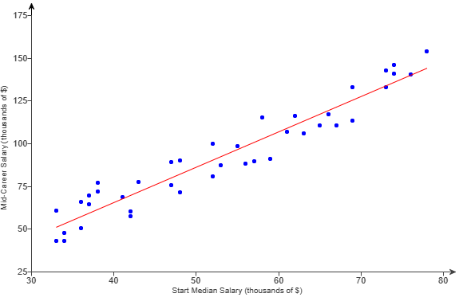
| Destination | Distance (km) | Price ($) |
|---|---|---|
|
Dallas Kansas City Baltimore New York City Seattle |
2353 2421 3945 4139 1094 |
172 198 265 308 141 |
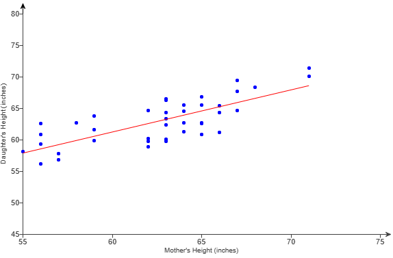
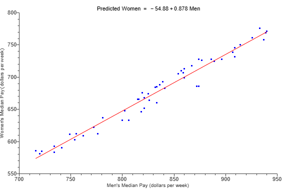
| Mean | Standard deviation | |
| Midterm | 75 | 8 |
| Final | 75 | 8 |
| Names of competitors | Performance 1 | Performance 2 |
|---|---|---|
| Savchenko & Massot | 76.59 | 159.31 |
| Sui & Han | 82.39 | 153.08 |
| Duhamel & Radford | 76.81 | 153.33 |
| Tarasova & Morozov | 81.68 | 143.25 |
| James & Cipress | 75.34 | 143.19 |
| Marchei & Hotarek | 74.50 | 142.09 |
| Zabiiako & Enbert | 74.34 | 138.53 |
| Yu & Zhang | 75.58 | 128.52 |
| Seguin & Bilodeau | 67.52 | 136.50 |
| Della Monica & Guarise | 74.00 | 128.74 |
| Height (inches) | $27$ | $25.75$ | $26.75$ | $25.5$ | $27.25$ | $26.25$ | $26.25$ | $27.25$ |
| Head Circumference (inches) | $17.4$ | $17.1$ | $17.3$ | $16.9$ | $17.6$ | $17.2$ | $17.2$ | $17.4$ |
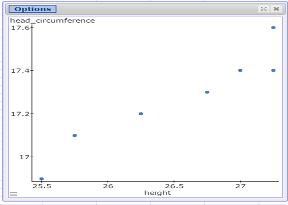
| $x$ | $x - \bar{x}$ | $(x - \bar{x})^2$ | $y$ | $y - \bar{y}$ | $(y - \bar{y})^2$ |
|---|---|---|---|---|---|
| $27$ | $0.5$ | $0.25$ | $17.4$ | $0.1375$ | $0.0189$ |
| $25.75$ | $-0.75$ | $0.5625$ | $17.1$ | $-0.1625$ | $0.0264$ |
| $26.75$ | $0.25$ | $0.0625$ | $17.3$ | $0.0375$ | $0.0014$ |
| $25.5$ | $-1$ | $1$ | $16.9$ | $-0.3625$ | $0.1314$ |
| $27.25$ | $0.75$ | $0.5625$ | $17.6$ | $0.3375$ | $0.1139$ |
| $26.25$ | $-0.25$ | $0.0625$ | $17.2$ | $-0.0625$ | $0.0039$ |
| $26.25$ | $-0.25$ | $0.0625$ | $17.2$ | $-0.0625$ | $0.0039$ |
| $27.25$ | $0.75$ | $0.5625$ | $17.4$ | $0.1375$ | $0.0189$ |
| $\Sigma x = 212$ | $\Sigma (x - \bar{x})^2 = 3.125$ | $\Sigma y = 138.1$ | $\Sigma (y - \bar{y})^2 = 0.3187$ | ||
| $x$ | $x - \bar{x}$ | $\dfrac{x - \bar{x}}{s_x}$ | $y$ | $y - \bar{y}$ | $\dfrac{y - \bar{y}}{s_y}$ | $\left(\dfrac{x - \bar{x}}{s_x}\right)\left(\dfrac{y - \bar{y}}{s_y}\right)$ |
|---|---|---|---|---|---|---|
| $27$ | $0.5$ | $0.7483$ | $17.4$ | $0.1375$ | $0.6443$ | $0.4822$ |
| $25.75$ | $-0.75$ | $-1.1224$ | $17.1$ | $-0.1625$ | $-0.7615$ | $0.8547$ |
| $26.75$ | $0.25$ | $0.3741$ | $17.3$ | $0.0375$ | $0.1757$ | $0.0657$ |
| $25.5$ | $-1$ | $-1.4966$ | $16.9$ | $-0.3625$ | $-1.6987$ | $2.5423$ |
| $27.25$ | $0.75$ | $1.1224$ | $17.6$ | $0.3375$ | $1.5815$ | $1.7751$ |
| $26.25$ | $-0.25$ | $-0.3741$ | $17.2$ | $-0.0625$ | $-0.2929$ | $0.1096$ |
| $26.25$ | $-0.25$ | $-0.3741$ | $17.2$ | $-0.0625$ | $-0.2929$ | $0.1096$ |
| $27.25$ | $0.75$ | $1.1224$ | $17.4$ | $0.1375$ | $0.6443$ | $0.7232$ |
| $\Sigma \left(\dfrac{x - \bar{x}}{s_x}\right)\left(\dfrac{y - \bar{y}}{s_y}\right) = 6.6624$ | ||||||
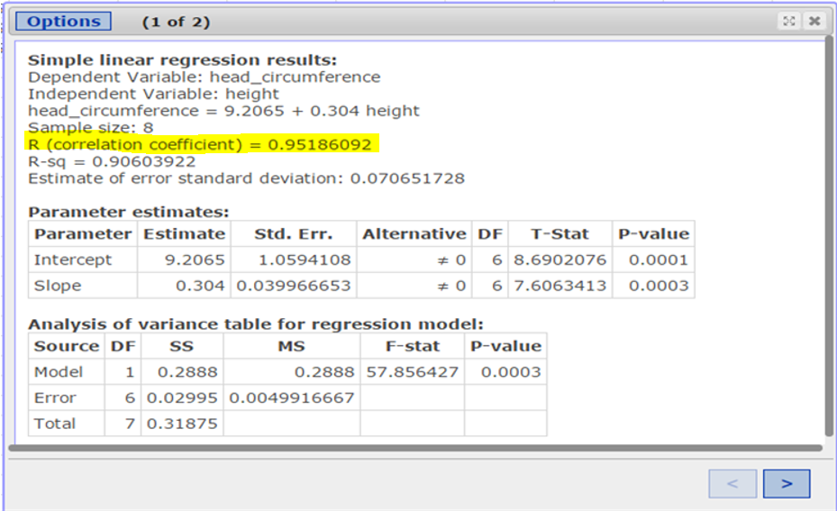
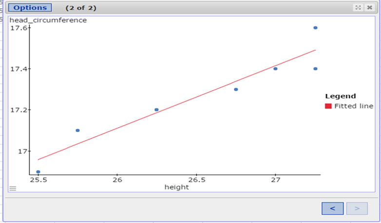
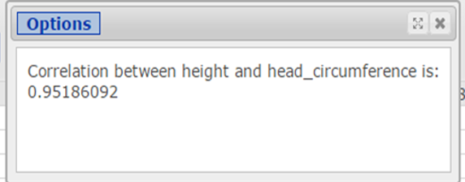
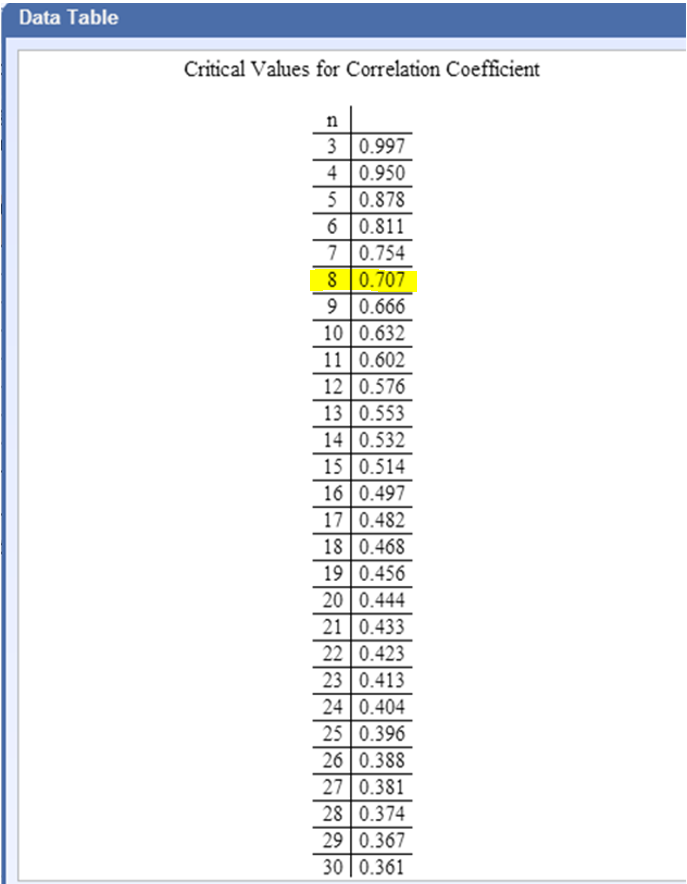
| Students | $A$ | $B$ | $C$ | $D$ | $E$ | $F$ | $G$ | $H$ | $I$ | $J$ |
| Performance in Entrance Examination | $11$ | $12$ | $8$ | $13$ | $6$ | $15$ | $10$ | $14$ | $17$ | $16$ |
| School Performance | $5$ | $10$ | $9$ | $7$ | $4$ | $8$ | $6$ | $14$ | $11$ | $12$ |
| Performance in Entrance Examination, $X$ | $11$ | $12$ | $8$ | $13$ | $6$ | $15$ | $10$ | $14$ | $17$ | $16$ |
| Rank $X$ | $4$ | $5$ | $2$ | $6$ | $1$ | $8$ | $3$ | $7$ | $10$ | $9$ |
| School Performance, $Y$ | $5$ | $10$ | $9$ | $7$ | $4$ | $8$ | $6$ | $14$ | $11$ | $12$ |
| Rank $Y$ | $2$ | $7$ | $6$ | $4$ | $1$ | $5$ | $3$ | $10$ | $8$ | $9$ |
| Performance in Entrance Examination, $X$ | School Performance, $Y$ | $R_X$ | $R_Y$ | $d = R_X - R_Y$ | $d^2$ |
|---|---|---|---|---|---|
| $11$ | $5$ | $4$ | $2$ | $2$ | $4$ |
| $12$ | $10$ | $5$ | $7$ | $-2$ | $4$ |
| $8$ | $9$ | $2$ | $6$ | $-4$ | $16$ |
| $13$ | $7$ | $6$ | $4$ | $2$ | $4$ |
| $6$ | $4$ | $1$ | $1$ | $0$ | $0$ |
| $15$ | $8$ | $8$ | $5$ | $3$ | $9$ |
| $10$ | $6$ | $3$ | $3$ | $0$ | $0$ |
| $14$ | $14$ | $7$ | $10$ | $-3$ | $9$ |
| $17$ | $11$ | $10$ | $8$ | $2$ | $4$ |
| $16$ | $12$ | $9$ | $9$ | $0$ | $0$ |
| $\Sigma d^2 = 50$ | |||||
| $x$ | $7$ | $6$ | $6$ | $7$ | $9$ |
| $y$ | $3$ | $7$ | $6$ | $9$ | $5$ |
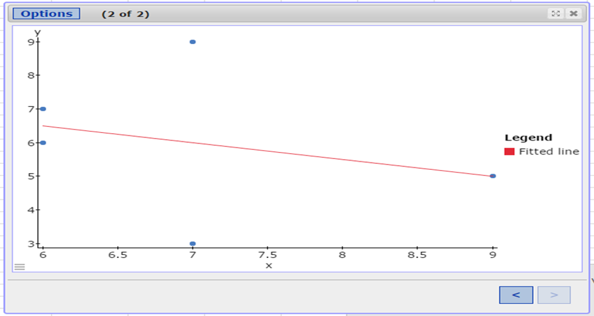
| $x$ | $y$ | $x^2$ | $y^2$ | $xy$ |
|---|---|---|---|---|
| $7$ | $3$ | $7^2 = 49$ | $3^2 = 9$ | $7 * 3 = 21$ |
| $6$ | $7$ | $6^2 = 36$ | $7^2 = 49$ | $6 * 7 = 42$ |
| $6$ | $6$ | $6^2 = 36$ | $6^2 = 36$ | $6 * 6 = 36$ |
| $7$ | $9$ | $7^2 = 49$ | $9^2 = 81$ | $7 * 9 = 63$ |
| $9$ | $5$ | $9^2 = 81$ | $5^2 = 25$ | $9 * 5 = 45$ |
| $\Sigma x = 35$ | $\Sigma y = 30$ | $\Sigma x^2 = 251$ | $\Sigma y^2 = 200$ | $\Sigma xy = 207$ |
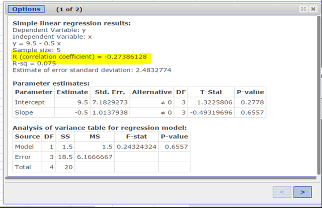
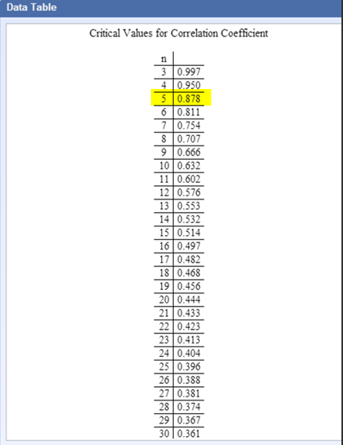
| WIND SPEED IN km/h ($x$) | 2 | 6 | 15 | 20 | 25 | 17 | 11 | 24 | 13 | 22 |
| TEMPERATURE IN °C ($y$) | 28 | 26 | 22 | 22 | 16 | 20 | 24 | 19 | 26 | 19 |
| $x$ | $x - \bar{x}$ | $(x - \bar{x})^2$ | $\dfrac{x - \bar{x}}{s_x}$ |
|---|---|---|---|
| $2$ | $-13.5$ | $182.25$ | $-1.765045216$ |
| $6$ | $-9.5$ | $90.25$ | $-1.242068856$ |
| $15$ | $-0.5$ | $0.25$ | $-0.065372045$ |
| $20$ | $4.5$ | $20.25$ | $0.588348405$ |
| $25$ | $9.5$ | $90.25$ | $1.242068856$ |
| $17$ | $1.5$ | $2.25$ | $0.196116135$ |
| $11$ | $-4.5$ | $20.25$ | $-0.588348405$ |
| $24$ | $8.5$ | $72.25$ | $1.111324766$ |
| $13$ | $-2.5$ | $6.25$ | $-0.326860225$ |
| $22$ | $6.5$ | $42.25$ | $0.849836586$ |
| $ \Sigma x = 155 \\[3ex] n = 10 \\[3ex] \bar{x} = \dfrac{\Sigma x}{n} \\[5ex] \bar{x} = \dfrac{155}{10} \\[5ex] \bar{x} = 15.5 $ | $ \Sigma (x - \bar{x})^2 = 526.5 \\[5ex] s_x = \sqrt{\dfrac{\Sigma (x - \bar{x})^2}{n - 1}} \\[5ex] = \sqrt{\dfrac{526.5}{9}} \\[5ex] = \sqrt{58.5} \\[3ex] = 7.64852927 $ | ||
| $y$ | $y - \bar{y}$ | $(y - \bar{y})^2$ | $\dfrac{y - \bar{y}}{s_y}$ |
|---|---|---|---|
| $28$ | $5.8$ | $33.64$ | $1.528434202$ |
| $26$ | $3.8$ | $14.44$ | $1.001387926$ |
| $22$ | $-0.2$ | $0.04$ | $-0.052704628$ |
| $22$ | $-0.2$ | $0.04$ | $-0.052704628$ |
| $16$ | $-6.2$ | $38.44$ | $-1.633843458$ |
| $20$ | $-2.2$ | $4.84$ | $-0.579750904$ |
| $24$ | $1.8$ | $3.24$ | $0.474341649$ |
| $19$ | $-3.2$ | $10.24$ | $-0.843274043$ |
| $26$ | $3.8$ | $14.44$ | $1.001387926$ |
| $19$ | $-3.2$ | $10.24$ | $-0.843274043$ |
| $ \Sigma y = 222 \\[3ex] n = 10 \\[3ex] \bar{y} = \dfrac{\Sigma y}{n} \\[5ex] \bar{y} = \dfrac{222}{10} \\[5ex] \bar{y} = 22.2 $ | $ \Sigma (y - \bar{y})^2 = 129.6 \\[5ex] s_y = \sqrt{\dfrac{\Sigma (y - \bar{y})^2}{n - 1}} \\[5ex] = \sqrt{\dfrac{129.6}{9}} \\[5ex] = \sqrt{14.4} \\[3ex] = 3.794733192 $ | ||
| $\left(\dfrac{x - \bar{x}}{s_x}\right) \left(\dfrac{y - \bar{y}}{s_y}\right)$ |
|---|
| $-2.697755477$ |
| $-1.243792755$ |
| $0.003445409$ |
| $-0.031008684$ |
| $-2.029346074$ |
| $-0.113698507$ |
| $-0.279078153$ |
| $-0.937151328$ |
| $-0.327313883$ |
| $-0.716645133$ |
| $\Sigma \left(\dfrac{x - \bar{x}}{s_x}\right) \left(\dfrac{y - \bar{y}}{s_y}\right) = -8.372344585$ |
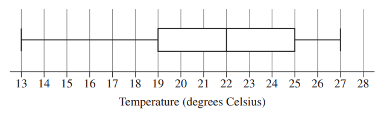